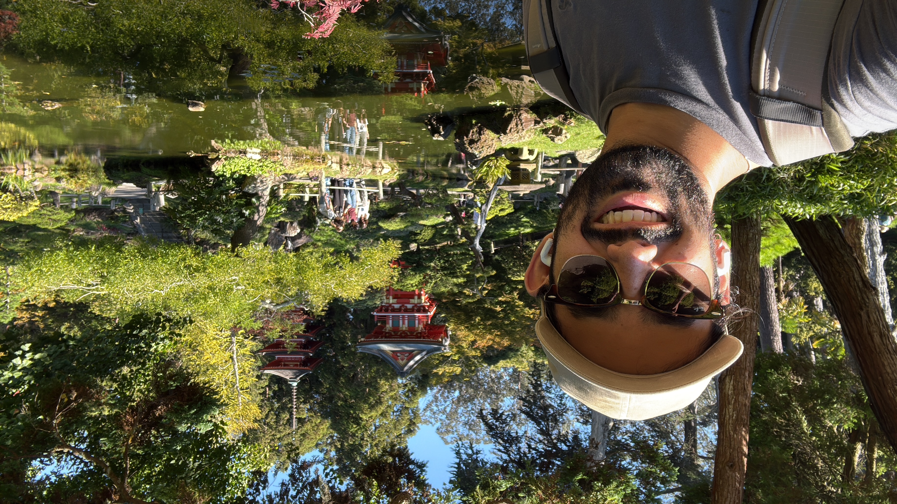

Neelam Akula
PhD Candidate — University of Texas at Dallas
Office: BE 3.302B · Dallas, TX
I am a PhD candidate in mathematics at UTD, advised by Baris Coskunuzer. My research centers on Graph Representation Learning and Topological Machine Learning — specifically on task transferability and interpretable/explainable ML for graph foundation models. I am also actively working on trade network analysis.
Previously, I was an undergraduate at UMD (2019-2023) where I worked with Amin Gholampour on the moduli space of quiver representations. My undergraduate thesis: Quiver Representations and Auslander-Reiten Theory.
Research
Published
-
Same Graph Cross-Task Transfer in GNNs: Protocols and PredictorsICML 2026 — International Conference on Machine Learning, July 2026

-
PAKDD 2026 — Pacific-Asia Conference on Knowledge Discovery and Data Mining, June 2026
In Preparation & Submitted
-
Input-Output Network Topology Reveals Persistent Structural Regimes in the Global EconomyIn preparation, 2026
-
Graph Label Alignment: A Diagnostic Atlas for Graph ClassificationSubmitted, 2026
Lecture Notes & Expository Writing
Teaching
- TA MATH 2418 — Linear Algebra, UTD (F23, F24, S25, S26)
- MATH 2414 — Integral Calc, UTD (S24)
- MATH 2413 — Differential Calc, UTD (F25)
- Instructor MATH 299Q — Quiver Representations, UMD (S23)
Miscellaneous
Outside of research, I spend a lot of time on electronic music production, digital signal processing, modular synthesis, VST/plug-in development, and analog emulation. I also read a lot, mostly literary fiction and philosophy, and recently have started tracking it on Goodreads (for now — I've been meaning to migrate to StoryGraph).
{kind=link}
- Free mathematics textbooks from Georgia Tech
- Keith Conrad's expository papers
- A map of the (model-theoretic) universe